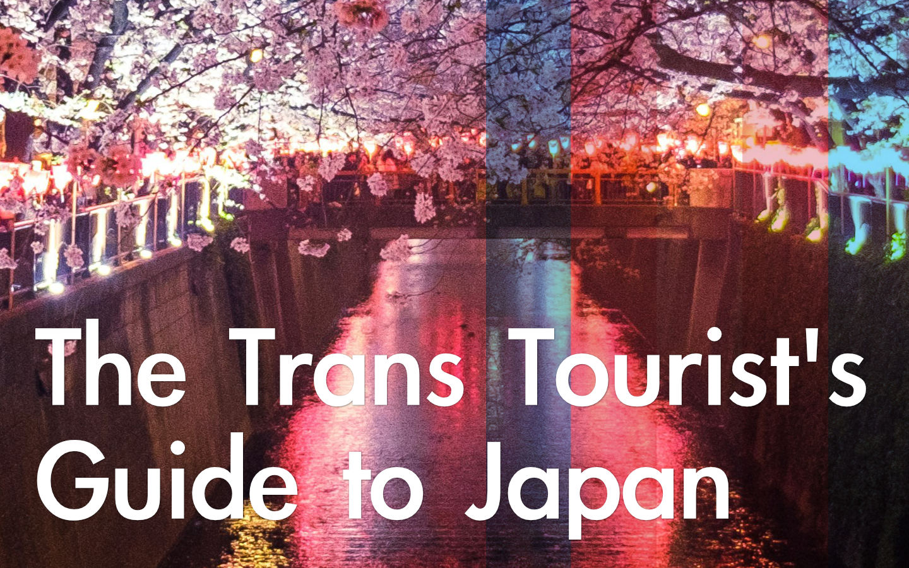
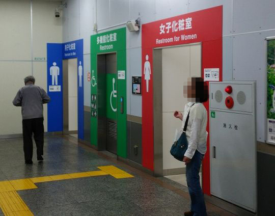
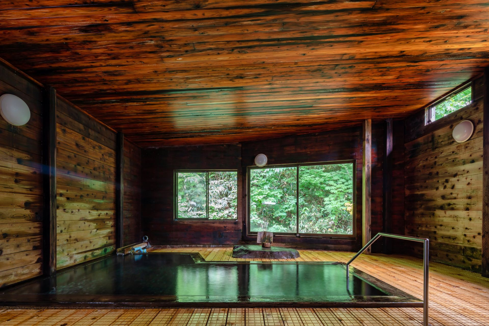

|

So you're going to travel to Japan
Great! In general, Japan's a good place to visit. I say that as someone who, prior to living here full-time, travelled to Japan frequently. I'm a trans nonbinary masc person living in Tokyo, and I often get questions about travelling here as a trans person.
I answer these questions enough that I thought I'd compile a thread of answers; I hope this helps you or someone your love in her/his/their/xir/eir travels. If you found this guide helpful or have more questions, please comment below. I don't have all the answers, but I'll do my best to respond.
I am not a certified doctor or lawyer, so any advice here does not constitute professional advice.
Q: Is it safe to visit Japan as a trans person?
A: Yes. I'm going on the assumption here that if you are visiting Japan as a tourist and are reading this guide in English, you don't speak Japanese as well as you speak English. In general, Japan is pretty tourist-friendly. It is not as English friendly as you'd expect. Most tourist-friendly areas in Tokyo will have English signs or menus; this does not necessarily mean the staff speaks English.
In these cases, I'd suggest to use a live translator app like Say Hi! to communicate.
Q: Are there trans-friendly restrooms?
A: Toilets are pretty gendered here. In Tokyo, there are daredemo toilet (universal toilets) or all-gender restrooms but they are less common than gendered toilets. Men's toilets are blue, while women's are red. Depending on how comfortable you feel "passing" in the gendered restrooms, using the men's or women's toilet is an option.
Some things to note: for trans men, it's not uncommon for the men's public toilet to have only one individual stall or only urinals. If you have a StP (stand-to-pee) device, you may want to pack it. (Pun intended!)
As for trans women: be aware that acceptance of trans women in public restrooms is on the rise. According to a study by Kanazawa University, 66.9% of women were accepting of using public toilets alongside trans folks. If you ever feel uncomfortable, use a daredemo toilet, an all-gender toilet, or go to a café. No need to stress out on your vacation.
What is a daredemo toilet toilet? It's a universal toilet for all genders and abilities. They often have green signage on them and have wheelchair-accessible push button on them.

If you can't find or are not comfortable with daredemo toilets, chain cafés like Tully's, Starbucks, Komeda, Doutor and Excelsior in Tokyo typically have single-stall restrooms for a more private place to go. With these cafés, it's polite to buy a drink before you use the restroom.
Q: What about hot springs?
Hot springs are also highly-gendered. I recommend you book a kashikiri onsen if you want to visit hot springs, since this allows you and your partner(s) of any gender to exclusively use the hot spring for a certain period of time, without worrying about male/female or social norms.

If you wish to go to gendered hot springs, it will depend on the management and whether you have had gender-affirming surgery or not. Your mileage may vary here.
Please read up on hot spring ettiquete in Japan before you go.
You can also go to mixed-gender, or konyoku onsens. As a personal recommendation, Nyuto Onsen (乳糖温泉) and in particular Ganiba Onsen's Karakonoyu in Akita is mixed-gender. It's one of my favorite places to go to in Japan in winter.

Women Wandering Beyond has a list of 23 mixed onsens for you to check out.
Kitahama Onsen TERMAS is a swimsuit-based onsen in Beppu. They have hosted LGBTQIA+ events before and because everyone is in swimsuits, gender matters less.
Q: Can I bring my medication?
A: You can take up to a month's medication with you without pre-approval. Beyond that, it may require pre-approval called a yakkan shomei/yunyu kakuninsho. In fact, bringing testosterone into Japan isn't so much of a problem as the syringes needed to take testosterone. These require pre-approval.
Here's the English page for the Ministry of Health, Labour and Welfare's website with contact info and more detailed info. Contact them if you're unclear if your medication is covered.
Q: What's the queer nightlife like in Tokyo?
A: Ni-chome in Shinjuku is Tokyo's LGBTQIA+ district. There's also a variety of cool parties and events:
- If you can catch the WAIFU Party while you're here, it is the gender-free party to be at. They usually do events once a month. Check their Instagram for event dates.
- 2's CABIN is an FTM bar, open to all trans folks. The bars are small and permit smoking inside. Though the staff doesn't speak English, they are friendly. Buying the bartender a drink is a good way to start.
- Aiiro Cafe and Arty Farty are where I've seen English-speaking queer folks hang out.
- GOLDFINGER, a lesbian bar in Tokyo, is all-gender most days and women (trans women inclusive) only on Saturdays. Mondays is "boi's night" and FTM staff are working.
In the past GOLDFINGER wasn't accepting of trans women. In fact, WAIFU was made as an alternative queer femme space to GOLDFINGER.
For those of you who like drag, if you want to see local drag queens, check out Haus of Gaishoku's Beauty Blenda, Haus von Schwarz, or Kings of Tokyo, the local drag king community.
I want to support LGBTQIA+ organizations in Japan!
LGBTQIA+ rights here are still hotly debated; while some municipalities have legalized a same-sex partnership system, same-sex marriage is not legal nationwide. Even though it has been judged unconstitutional, trans folks still face discrimination at work and especially in changing their gender marker on official documentation.
If you want to support local LGBTQIA+ organizations, below are a few:
- Pride House Tokyo is a café like space with free internet and provides support to the LGBTQIA+ community as well as employment. It is funded by Coca-Cola but wants to raise funds from the local community to continue running.
- WAIFU Party provides a gender-free space for the queer community here.
- Marriage for all Japan is an organization fighting for legalization of same-sex marriage in Japan.
In conclusion...
Japan's a safe place to vacation for trans visitors, in my opinion. Most people are welcoming and friendly. Public approval has been on the rise. I'm hopeful that laws in Japan will be changed so that the LGBTQIA+ folks that live here can live openly, freely, have access to the medical care they need and love who they love.
This guide is a labor of love. If you found this guide helpul, consider leaving a comment or supporting me on Ko-Fi. A few dollars goes a long way in yen!
Have a safe and pleasant journey to Japan!
Yours truly,
CJ